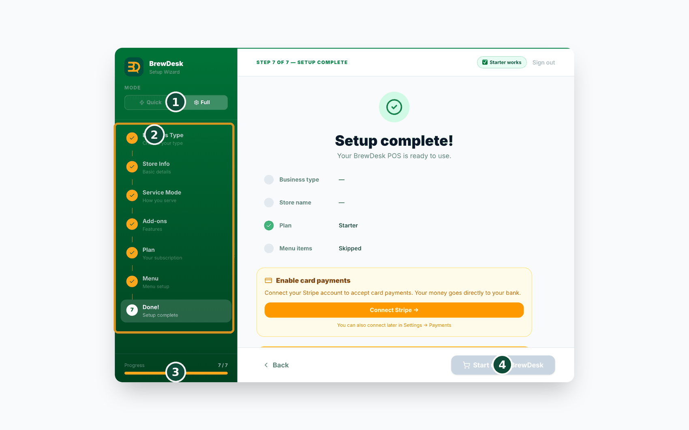

2빠른 시작 — 5분이면 바로 시작
첫 판매를 가장 빨리 하는 방법입니다. 약 5분이면 충분합니다. 작은 단계를 하나씩 따라 해 주세요.
- 웹 브라우저를 열고 brewdesk.io로 이동합니다.
- 이메일과 비밀번호를 입력해 가입합니다. 신용카드는 필요하지 않습니다.
- 어떤 가게인지 선택합니다. 카페, 식당, 바, 미용실, 스파, 베이커리 중에서 선택하면 BrewDesk가 그에 맞게 설정합니다.
- AI 메뉴 만들기 버튼을 탭합니다. 몇 초 만에 시작 메뉴가 만들어집니다. (직접 몇 가지를 입력해도 됩니다.)
- 주문 화면을 찾습니다. 상품을 탭해 주문에 담습니다.
- Cash를 탭하면 바로 판매가 끝납니다. "판매 완료" 메시지가 표시되며, 이것으로 첫 판매가 완료됩니다.
- 나중에 카드 결제를 받으려면 본인의 Stripe 계정을 연결하면 됩니다. (방법은 7장에서 안내합니다.)
잘못 설정해도 걱정하지 않으셔도 됩니다. 나중에 Settings에서 무엇이든 바꿀 수 있습니다. 여기서 정한 내용은 영구적인 것이 아닙니다.
자랑할 만한 점
5분, 설치할 것 없음, 교육 필요 없음. 다른 계산대는 설정 통화를 예약하게 합니다. BrewDesk는 커피가 식기 전에 판매를 시작할 수 있게 해 줍니다.
처음 설정 (7단계)
처음 가입하면 설정 마법사가 몇 가지 간단한 단계를 안내합니다. 무엇을 묻는지 순서대로 설명합니다. 안내에 따라 탭하면 됩니다.
- 업종(Business Type) — 어떤 가게인지 선택합니다: 카페, 식당, 바, 미용실, 스파, 베이커리.
- 매장 정보(Store Info) — 매장 이름을 입력하고, 나라나 지역을 선택하고, 계산대(till)가 몇 대인지 입력합니다.
- 서비스 모드(Service Mode) — Counter(카운터에서 주문) 또는 Table 서비스(테이블에서 주문)를 선택합니다.
- 애드온(Add-ons) — 원하는 추가 기능을 켭니다. 나중에 바꿀 수 있으므로 걱정하지 않으셔도 됩니다.
- 플랜(Plan) — Starter(무료), Pro, Business 중에서 선택합니다. Pro와 Business는 1개월 무료 체험이 제공되며, 시작할 때 신용카드가 필요하지 않습니다.
- 메뉴(Menu) — 준비된 템플릿으로 시작하거나, AI가 만들게 하거나, 직접 추가합니다. (AI 메뉴 만들기는 4장에서 더 자세히 안내합니다.)
- 사장님 PIN(Owner PIN) — 화면을 잠글 PIN을 정합니다. 이 단계는 선택 사항입니다.
이것으로 설정이 끝납니다. 간단한 세금 안내만 확인하면 바로 판매할 준비가 됩니다.

전체가 약 5분이면 끝납니다. 무엇이든 나중에 Settings에서 바꿀 수 있다는 점을 기억해 주세요.
연습 모드에서 진짜 영업으로 (라이브 전환)
처음에는 연습 모드로 시작합니다. 마음껏 눌러 보고 가짜 주문을 넣어 보아도 실제 매출로 잡히지 않습니다. 실제로 장사를 시작할 준비가 되면 라이브로 전환합니다.
누르는 곳
연습 모드일 때 화면 맨 위에 "Practice mode — sales are not counted as real revenue"(연습 모드 · 실제 매출로 집계되지 않습니다) 띠가 표시됩니다. 그 옆의 "Go Live"(라이브 전환)를 탭합니다.
- 빠진 설정이 있으면 먼저 확인 목록이 표시됩니다 — 매장 이름, 국가, 통화, 시간대, 업종, 세율 확인, 사업자 등록번호, 매장 주소, 메뉴 1개 이상.
- 각 줄의 "Set up"(설정하기)을 누르면 해당 설정 화면으로 바로 이동합니다. 모두 채운 뒤 "Re-check"(다시 확인)를 눌러 주세요.
- 모두 완료되면 셋 중에서 선택합니다 — "Still practicing"(연습 더 하기 · 아무것도 바뀌지 않습니다), "Reset and go live"(연습 기록을 지우고 깨끗하게 시작), "Already in business"(지금까지의 기록을 그대로 두고 라이브 · 실제로 문을 연 날짜를 함께 지정합니다).
- 선택한 내용을 한 번 더 확인하는 화면이 나옵니다. 무엇이 지워지고 무엇이 남는지 목록으로 보여 줍니다.
- 실제 영업으로 넘어가는 두 가지(B·C)는 이메일로 인증 코드를 보냅니다. 라이브 전환은 되돌릴 수 없으므로 한 번 더 본인 확인을 합니다.
- 전환이 완료되면 매출이 공식 기록으로 쌓이고, 손님도 휴대폰으로 주문할 수 있습니다.
이미 실제 대금을 받았다면 "연습 더 하기"는 표시되지 않습니다. 실제 주문·카드 결제·마감 기록이 하나라도 있으면 해당 카드가 숨겨지고 다음과 같이 안내합니다 — "Real sales detected — 'Keep practicing' is not available. Choose Reset (B) or Keep data & go live (C)."(실제 매출이 확인되어 '연습 유지'는 선택할 수 없습니다. 초기화(B)나 데이터 유지(C) 중에서 선택해 주세요.) 옆 패널에는 무엇이 발견되었는지(주문 수·금액·카드 사용 여부·마감 건수)도 표시됩니다. 어제 받은 실제 대금을 연습이었던 것으로 처리하면 그 시점부터 장부가 맞지 않게 됩니다.
메인 계산대에서 진행해 주세요. 라이브 전환은 메인 POS에서만 가능합니다 — "Only the main POS can switch the store to live. Open this on your main register."(메인 POS에서만 라이브로 전환할 수 있습니다. 메인 계산대에서 열어 주세요.)
왜 미리 막나요? 세율이나 시간대가 비어 있는 채로 실제 영업을 시작하면 첫날 매출이 어긋난 채로 기록됩니다. 나중에 고치기가 훨씬 번거로우므로, 시작 전에 한 번 확인하도록 한 것입니다.
메뉴·세금·프린터·직원·Stripe 설정은 그대로 남습니다. "초기화하고 라이브"를 선택해도 지워지는 것은 연습 중에 쌓인 주문·매출·마감 기록뿐입니다.
알아두기: 연습 모드에서는 손님이 QR·온라인으로 실제 주문을 넣을 수 없습니다. 손님 화면에는 "이 매장은 연습 모드입니다"라고 표시됩니다.